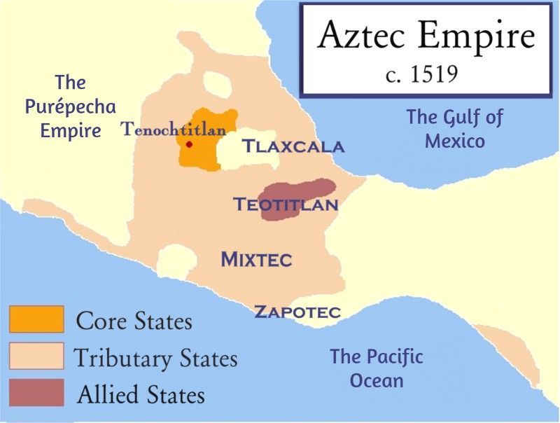
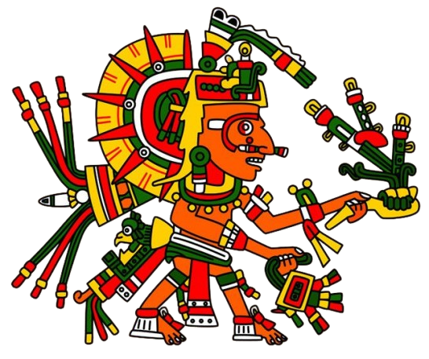

Aztec mythology was practiced by the Mexica (Aztec) civilization in Central Mexico; they were a cultured people who believed the world underwent cycles known as "Suns", and—to avert the apocalypse and keep the gods nourished—the State performed complex rituals, including the famous human sacrifices.
The Five Eras of the Sun
The Aztecs believed that the universe had undergone four previous creations and destructions before the
"Fifth Sun" (the current era):
Sun of the Giants (Nahui-Ocelotl): it ended when jaguars devoured the giants.
Wind Sun (Nahui-Ehecatl): destroyed by hurricanes, turning humans into monkeys.
Sun of the Rain of Fire (Nahui-Quiahuitl): it ended with a rain of volcanic fire.
Water Sun (Nahui-Atl): it ended in a great flood, where people turned into fish (with
the exception of a man and a woman who turned into dogs because of a curse).
Earthquake Sun (Nahui-Ollin): the current era, governed by the sun Tonatiuh, which is
believed will end in a great earthquake.
Gods
Quetzalcóatl: the "Feathered Serpent." God of wisdom, wind, and life. He was considered
the creator of present-day humanity.
Huitzilopochtli: aztec god of war and the state, principal patron deity of Tenochtitlán
and demanded sacrifices to keep the sun shining.
Tezcatlipoca: the god of the night sky, magic, and providence.

Tlaloc: god of rain and fertility, vital to agricultureAcuecucyoticihuati: goddess of the seas and river waters.
Chalmecacihuilt: god of the underworld and of sacrifice
Chantico: goddess of the hearth and volcanoes
Centeotl: corn god
Xólotl: god of lightning and spirits
Xochipilli: god of love, dance, and flowers.
How this reaches us
Aztec mythology has captured global pop culture thanks to its striking visual aesthetic, moral duality, and epic narratives of destruction and rebirth. The quest for cultural diversity and geographical proximity to Hollywood have also transformed its gods, sacrifices, and prophecies into the blockbuster phenomenon that fascinates audiences today.
Examples of famous works that use this mythology as a reference are Bleach, Black Panther, Pokémon, Transformers, etc.